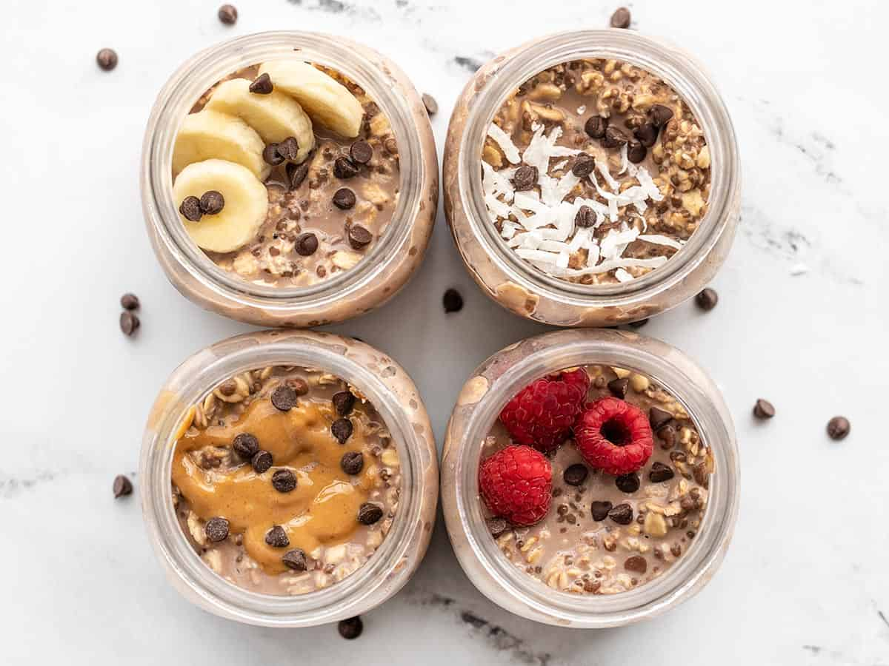

Overnight Oats

A filling and whole breakfast that will give you enough energy for the entire day and can be made to whichever flavour you'd like.
You will need:
- rolled oats
- any type of milk
- fruits of any kind
- seeds of any kind
- salt
Prepare as follows:
- add the oats and milk of your choosing to a container in a 1 to 1 ratio
- add a pinch of salt
- put it in the fridge and let it sit overnight
- the next morning, add any fruit of your liking to the mixture
- bring it up to flavour with any spices you'd like
- add any seeds you'd like
- optionally you can heat it up in the microwave